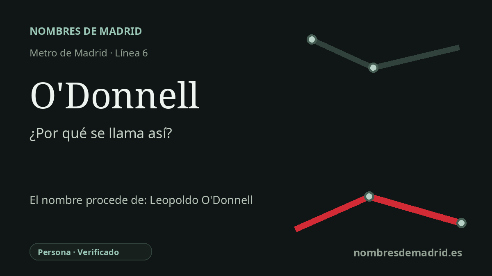

Publicado el · Investigación de Nombres de Madrid · Cómo verificamos cada origen · 7 fuentes consultadas
Respuesta rápida
La estación de O'Donnell toma su nombre de la calle de O'Donnell, dedicada a Leopoldo O'Donnell y Joris, general, líder de la Unión Liberal y presidente del Consejo de Ministros en el siglo XIX. La calle procede de la expansión oriental de Madrid tras el derribo de la antigua cerca urbana.
La historia del nombre
La estación de Metro toma su nombre de la cercana calle de O'Donnell, junto al entorno de la calle del Doctor Esquerdo y la Casa de la Moneda. Cuando la línea 6 abrió su primer tramo Pacífico-Cuatro Caminos en 1979, O'Donnell fue una de las diez estaciones de aquella nueva línea circular.
Detrás del nombre de la calle está Leopoldo O'Donnell y Joris, nacido en Santa Cruz de Tenerife en 1809 y fallecido en Biarritz en 1867. La Real Academia de la Historia lo identifica como I duque de Tetuán, conde de Lucena, militar, fundador y jefe de la Unión Liberal y presidente del Consejo de Ministros.
El nombre de O'Donnell adquirió especial proyección tras la guerra hispano-marroquí de 1859-1860. Documentación oficial de la Gaceta de Madrid de marzo de 1860 lo presenta como duque de Tetuán, conde de Lucena y capitán general en jefe del ejército español en África durante las bases preliminares de paz con Marruecos.
La calle pertenece al Madrid que se expandió hacia el este tras la eliminación de la antigua cerca urbana. Esa cerca debe entenderse mejor como la Cerca de Felipe IV, un límite fiscal y administrativo de época moderna, no como una muralla medieval. El callejero oficial actual sitúa la calle de O'Donnell en los distritos de Retiro y Salamanca, de acuerdo con la posición de la estación entre esas zonas urbanas.
La etimología está, por tanto, bien sustentada, con un matiz importante: Metro no bautizó la estación directamente por el estadista de forma aislada, sino que heredó el topónimo viario ya existente. No consta ningún nombre anterior de la estación, y el nombre actual parece estar en uso desde su inauguración el 11 de octubre de 1979.